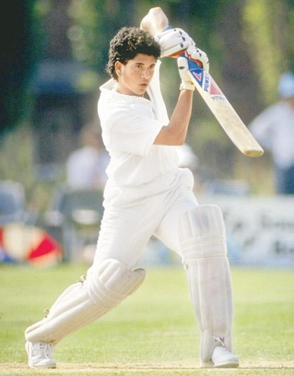
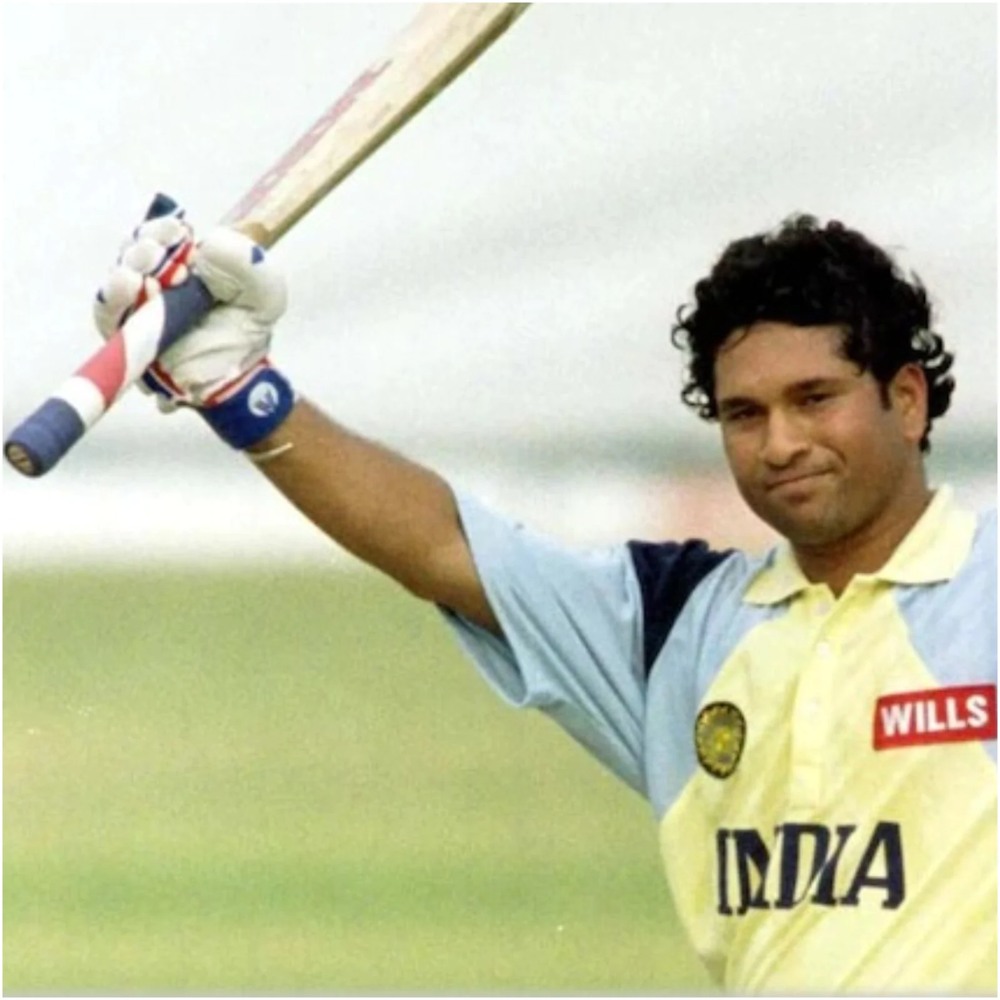
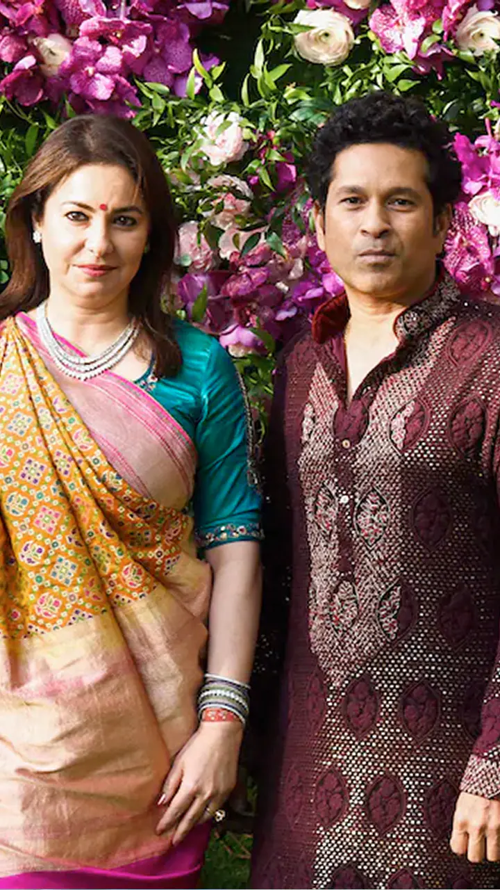
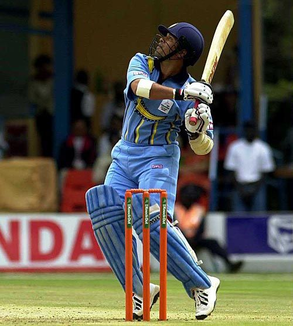
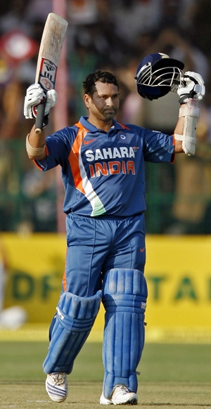
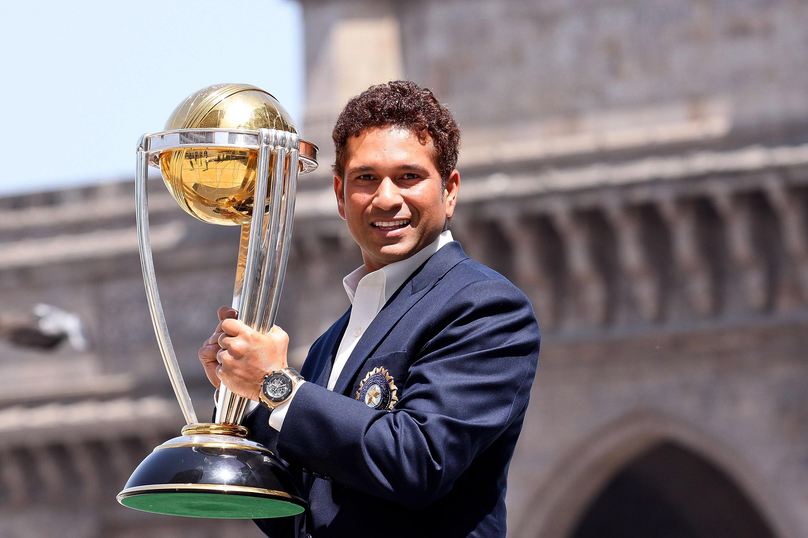
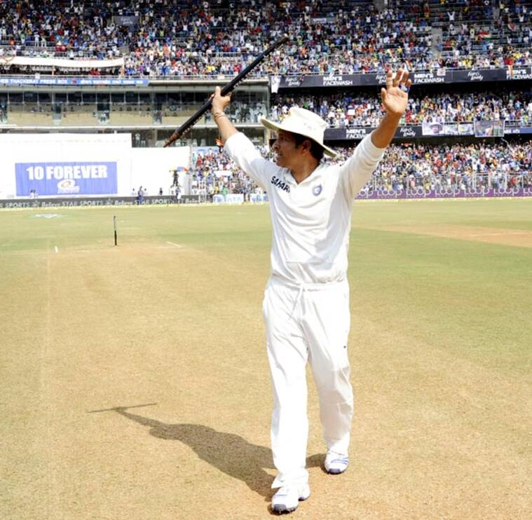

Sachin Tendulkar
The God Of Cricket (Sachin Sachin!!) 🏆
Personal Information |
|
|---|---|
| Full name | Sachin Ramesh Tendulkar |
| DOB | 24 April 1973 |
| Nickname | Little Master , Master Blaster ,God of Cricket |
| Role | Right hand batsman,Right arm bowler |
| Relations | Anjali Tendulkar (Wife) |
Timeline of Sachin Tendulkar:

- December 1988- Sachin Tendulkar made his first-class debut for Mumbai in the Ranji Trophy at the age of just 15. He scored his 1st first-class century in his debut game making him the youngest Indian to score a century on his first-class debut.
- November 1989- After a dream debut season for Mumbai and a century on Irani Trophy debut, Sachin made his Test debut for India against Pakistan at Karachi.
- December 1989-- Following decent performances in the Test series, Sachin was subsequently picked for the ODI leg of the Pakistan tour and made his debut in the 2nd ODI registering his first duck in international cricket.
- August 1990-- Sachin Tendulkar helped India save the Old Trafford Test through his maiden century in international cricket. Aged 17 years and 107 days, Sachin was the youngest ever Test centurion in the history of Indian cricket.
- November 1993-- Sachin bowled India to a win over South Africa in the semi-finals of the Hero Cup. Defending just 6 runs in the last over, Sachin gave away just 3 runs to pave the way for a memorable win.
- March 1994-- Sachin opened for the first time in ODI cricket and immediately made an impact scoring a 49-ball 82 against New Zealand.
- September 1994-- After making the opening spot his own, Sachin scored his first ODI hundred in his 79th game. He made 110 against Australia.


- May 1995-- Aged 22, Sachin tied the knot with Anjali Mehta. He hails his partnership with Anjali the best partnership of his life.
- February 1996-- Playing in his second World Cup, Tendulkar announced himself on the big stage as he finished the tournament with 523 runs, which was then the record for most runs in an edition of World Cup.
- October 1996-- Tendulkar captained India for the first time. Though he started with a win against Australia in his first Test as captain, Sachin did not do well as captain overall.
- April 1998-- Tendulkar played his best cricket in the Coca-Cola Cup against New Zealand and Australia. He single-handedly helped India clinch the triangular series scoring 143 and 134 in the virtual semi-final and finals against Australia.
- May 1999-- By his own admission, the toughest times of his career, Sachin left India’s World Cup campaign to perform the last rites of his father who had passed away in Mumbai. He showed great resilience in coming back to England and scored an unbeaten 140 in the next game he played.
- February 2000-- After two unsuccessful stints as captain, Sachin gave up captaincy and never took it back. He recommended Sourav Ganguly for the role and what construed after that is history.
- March 2001-- The little master became the first ever cricketer to have registered 10,000 ODI runs. He achieved this feat during the knock of 139 against Australia at Indore.
- March 2003-- Tendulkar lit India’s World Cup campaign in 2003, scoring a total of 673 runs in the tournament beating his own record set 7 years ago. Sachin’s contributions were critical in India’s road to the finals where they were defeated by Australia.


- January 2004-- Sachin recorded his first double hundred in Australia. Batting at his favorite cricket ground Sydney, Sachin remained unbeaten on 241. The remarkable aspect of this innings was he did not play a single cover drive in his innings which lasted for 436 balls.
- March 2005-- Scoring twin fifties in India’s win against Pakistan at the Eden Gardens, Tendulkar also went past 10,000 Test runs and became only the fifth player to do so in the history of the game.
- December 2005-- Tendulkar went past Gavaskar’s record (34 hundreds) of the most centuries in Test cricket as the little master scored 109 against Sri Lanka in Delhi.
- January 2008-- In the New Year Sydney Test of 2008, Sachin was at the cynosure of the ‘Monkey-Gate’ controversy. Since he was batting with Harbhajan Singh when the incident happened, Sachin was firm in his stance that Harbhajan never racially abused Symonds and even threatened to boycott the tour. Common sense prevailed and the three-match ban sanctioned on Harbhajan was lifted.
- February 2010-- Sachin breached the 200-run mark in ODI’s as he became the first ever player to score a double-century in ODI cricket. He remained unbeaten on 200 off 147 balls against South Africa at Gwalior.
- December 2010-- Sachin scored a memorable hundred against South Africa at Centurion, which was his 50th Test century.
- April 2011-- Sachin became a World Cup winner as India defeated Sri Lanka in the finals of the ICC World Cup 2011. Tendulkar topped the Indian batting charts scoring 482 runs in the tournament with 2 centuries.


- March 2012-- The Mumbaikar finally scored a century to complete 100 international centuries. His knock of 114 against Bangladesh at Mirpur was his 49th ODI hundred and his last century in international cricket.
- December 2012-- With 18,426 runs to his name to go with 49 ODI hundreds, Sachin called time on his ODI career. He finished the game as the greatest to have played the ODI format.
- November 2013-- After much speculation about his playing career, Sachin announced his retirement from international cricket. He played his final Test, which was his 200th of his career; against West Indies at home ground Wankhede.
"I have seen God, he bats at no. 4 for India"
Mathew Hayden